<!DOCTYPE html>
<html lang="en">
  <head>
    <meta charset="utf-8" />
    <meta name="viewport" content="width=device-width, initial-scale=1.0, maximum-scale=1.0, user-scalable=no" />

    <title>Seeing like a machine</title>
    <link rel="stylesheet" href="dist/reveal.css" />
    <link rel="stylesheet" href="dist/theme/black.css" id="theme" />
    <link rel="stylesheet" href="plugin/highlight/zenburn.css" />
	<link rel="stylesheet" href="css/layout.css" />
	<link rel="stylesheet" href="plugin/customcontrols/style.css">
	<link rel="stylesheet" href="plugin/chalkboard/style.css">

	<link rel="stylesheet" href="plugin/reveal-pointer/pointer.css" />


    <script defer src="dist/fontawesome/all.min.js"></script>

	<script type="text/javascript">
		var forgetPop = true;
		function onPopState(event) {
			if(forgetPop){
				forgetPop = false;
			} else {
				parent.postMessage(event.target.location.href, "app://obsidian.md");
			}
        }
		window.onpopstate = onPopState;
		window.onmessage = event => {
			if(event.data == "reload"){
				window.document.location.reload();
			}
			forgetPop = true;
		}

		function fitElements(){
			const itemsToFit = document.getElementsByClassName('fitText');
			for (const item in itemsToFit) {
				if (Object.hasOwnProperty.call(itemsToFit, item)) {
					var element = itemsToFit[item];
					fitElement(element,1, 1000);
					element.classList.remove('fitText');
				}
			}
		}

		function fitElement(element, start, end){

			let size = (end + start) / 2;
			element.style.fontSize = `${size}px`;

			if(Math.abs(start - end) < 1){
				while(element.scrollHeight > element.offsetHeight){
					size--;
					element.style.fontSize = `${size}px`;
				}
				return;
			}

			if(element.scrollHeight > element.offsetHeight){
				fitElement(element, start, size);
			} else {
				fitElement(element, size, end);
			}		
		}


		document.onreadystatechange = () => {
			fitElements();
			if (document.readyState === 'complete') {
				if (window.location.href.indexOf("?export") != -1){
					parent.postMessage(event.target.location.href, "app://obsidian.md");
				}
				if (window.location.href.indexOf("print-pdf") != -1){
					let stateCheck = setInterval(() => {
						clearInterval(stateCheck);
						window.print();
					}, 250);
				}
			}
	};


        </script>
  </head>
  <body>
    <div class="reveal">
      <div class="slides"><section  data-markdown><script type="text/template"><!-- .slide: class="drop" -->
<div class="" style="position: absolute; left: 0px; top: 0px; height: 1200px; width: 1920px; min-height: 1200px; display: flex; flex-direction: column; align-items: center; justify-content: center" absolute="true">

# Seeing like a machine
## AI & Society ― week 4


[Dr Daniel Chávez Heras](https://movingpixel.net/)

[6AAVC307](https://keats.kcl.ac.uk/course/view.php?id=110858) | [7AAVCD42](https://keats.kcl.ac.uk/course/view.php?id=108767)

2023-24
</div>

<aside class="notes"><p>This week we focus on images and on how computers see them. We take a dive in the sub-field of AI known as computer vision, going over its history, objectives, and applications. We then place computer vision in the wider context of technologies and theories of vision, from photography to text-to-image systems.</p>
</aside></script></section><section  data-markdown><script type="text/template"><!-- .slide: class="drop" -->
<div class="" style="position: absolute; left: 0px; top: 0px; height: 1200px; width: 1920px; min-height: 1200px; display: flex; flex-direction: column; align-items: center; justify-content: center" absolute="true">

# Can computers "see" the world?
</div>

<aside class="notes"><p>No, but they can process images of the world in ways that are useful and sometimes resemble the ways in which we see the world.</p>
</aside></script></section><section  data-markdown><script type="text/template"><!-- .slide: class="drop" -->
<div class="" style="position: absolute; left: 0px; top: 0px; height: 1200px; width: 1920px; min-height: 1200px; display: flex; flex-direction: column; align-items: center; justify-content: center" absolute="true">

<div class="callout callout-color8">
<div class="callout-title">
<div class="callout-icon">

<i class="fas fa-list" ></i>


</div>
<div class="callout-title-inner">

In today's lecture:  

</div>
</div>
<div class="callout-content">

1. Brief history of computer vision

2. Interpreting images ― Husky Lens demo

3. Self-supervision / contrastive learning ― CSNI demo

4. Synthesising images ― Dream Studio demo

5. Questions

</div>
</div>
</div></script></section><section  data-markdown><script type="text/template"><!-- .slide: class="has-dark-background drop" data-background-color="#304f5e" -->
<div class="" style="position: absolute; left: 0px; top: 0px; height: 1200px; width: 1920px; min-height: 1200px; display: flex; flex-direction: column; align-items: center; justify-content: center" absolute="true">

# 1. Computer Vision
## ultra short history of a field
</div></script></section><section  data-markdown><script type="text/template"><!-- .slide: class="drop" -->
<div class="" style="position: absolute; left: 0px; top: 0px; height: 1200px; width: 1920px; min-height: 1200px; display: flex; flex-direction: column; align-items: center; justify-content: center" absolute="true">

# Machine perception of three-dimensional solids
## (1963)
</div></script></section><section  data-markdown><script type="text/template"><!-- .slide: class="drop" -->
<div class="" style="position: absolute; left: 0px; top: 0px; height: 1200px; width: 1920px; min-height: 1200px; display: flex; flex-direction: column; align-items: center; justify-content: center" absolute="true">

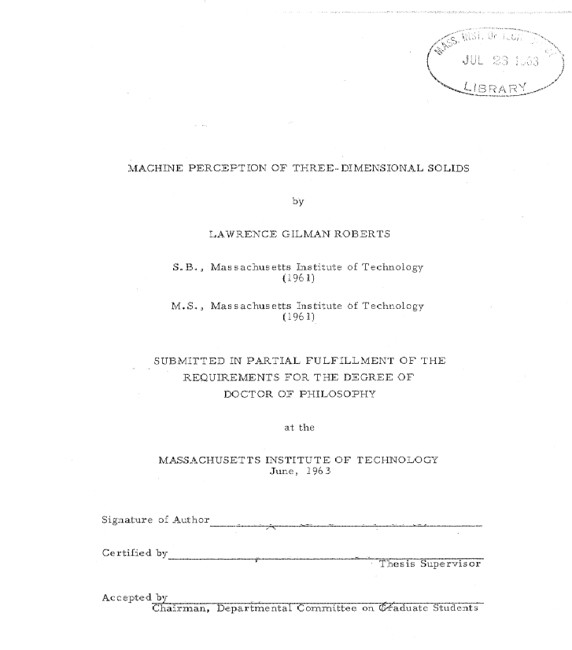
</div></script></section><section  data-markdown><script type="text/template"><!-- .slide: class="drop" -->
<div class="" style="position: absolute; left: 0px; top: 0px; height: 1200px; width: 1920px; min-height: 1200px; display: flex; flex-direction: column; align-items: center; justify-content: center" absolute="true">

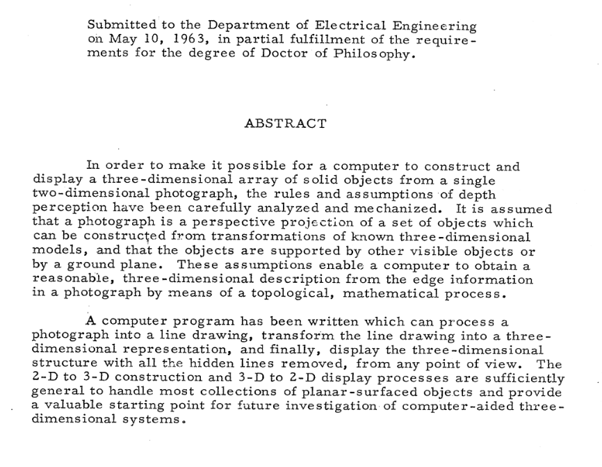
</div></script></section><section  data-markdown><script type="text/template"><!-- .slide: class="drop" -->
<div class="" style="position: absolute; left: 0px; top: 0px; height: 1200px; width: 1920px; min-height: 1200px; display: flex; flex-direction: column; align-items: center; justify-content: center" absolute="true">

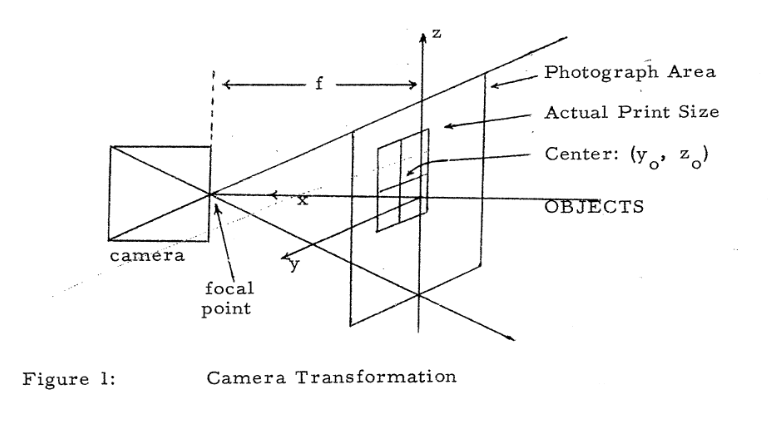
</div>

<aside class="notes"><p>p.15 of Lawrence Roberts&#39; Thesis</p>
</aside></script></section><section  data-markdown><script type="text/template"><!-- .slide: class="drop" -->
<div class="" style="position: absolute; left: 0px; top: 0px; height: 1200px; width: 1920px; min-height: 1200px; display: flex; flex-direction: column; align-items: center; justify-content: center" absolute="true">

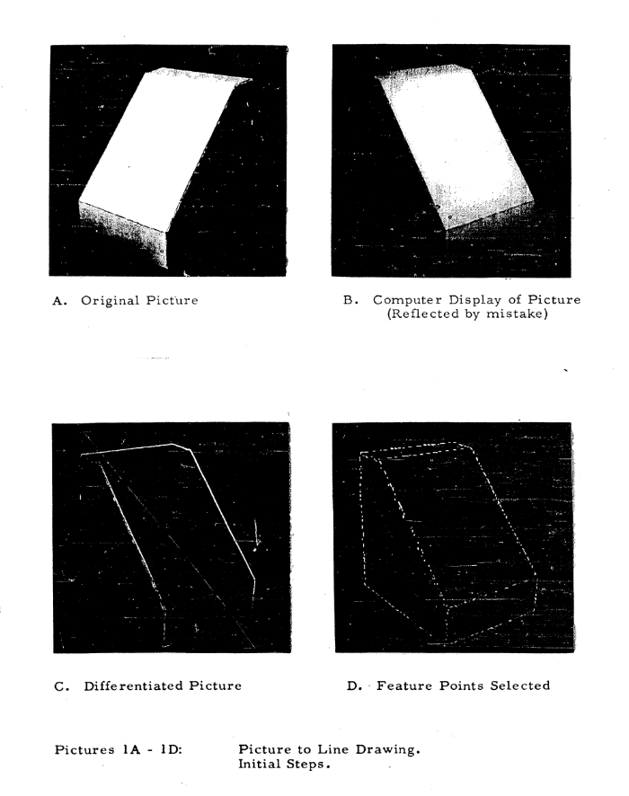
</div>

<aside class="notes"><p>p.35 of Lawrence Roberts&#39; Thesis</p>
</aside></script></section><section  data-markdown><script type="text/template"><!-- .slide: class="drop" -->
<div class="" style="position: absolute; left: 0px; top: 0px; height: 1200px; width: 1920px; min-height: 1200px; display: flex; flex-direction: column; align-items: center; justify-content: center" absolute="true">

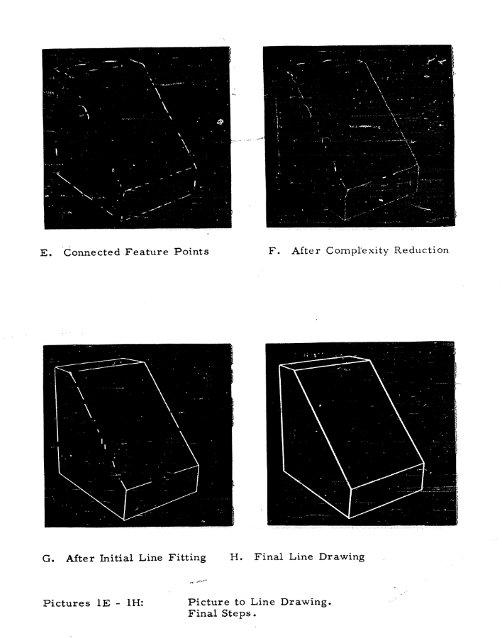
</div>

<aside class="notes"><p>p.36 of Lawrence Roberts&#39; Thesis</p>
</aside></script></section><section  data-markdown><script type="text/template"><!-- .slide: class="drop" -->
<div class="" style="position: absolute; left: 0px; top: 0px; height: 1200px; width: 1920px; min-height: 1200px; display: flex; flex-direction: column; align-items: center; justify-content: center" absolute="true">

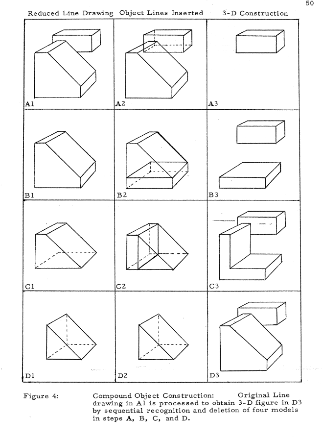
</div>

<aside class="notes"><p>p.15 of Lawrence Roberts&#39; PhD thesis</p>
</aside></script></section><section  data-markdown><script type="text/template"><!-- .slide: class="drop" -->
<div class="" style="position: absolute; left: 0px; top: 0px; height: 1200px; width: 1920px; min-height: 1200px; display: flex; flex-direction: column; align-items: center; justify-content: center" absolute="true">

# The summer of vision project
## (1966)
</div>

<aside class="notes"><p>People then thought that constructing a machine to mimic the human visual system was going to be an easy task on the road to finally building a robot with human-like intelligent behaviour.</p>
</aside></script></section><section  data-markdown><script type="text/template"><!-- .slide: class="drop" -->
<div class="" style="position: absolute; left: 0px; top: 0px; height: 1200px; width: 1920px; min-height: 1200px; display: flex; flex-direction: column; align-items: center; justify-content: center" absolute="true">

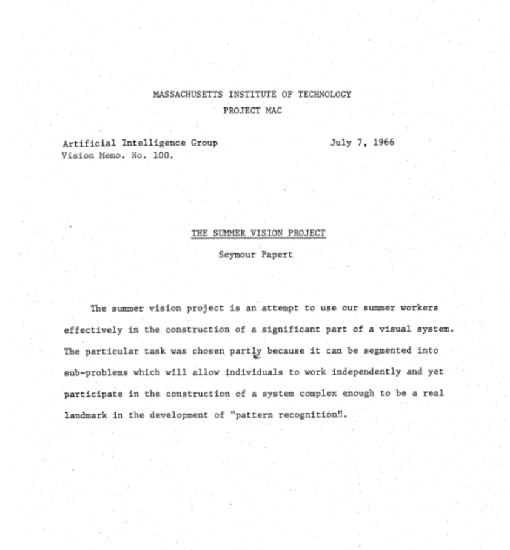
</div>

<aside class="notes"><p>Seymour Papert gave it to Gerald Sussman for July and August.
It took almost 50 years to do this...</p>
</aside></script></section><section  data-markdown><script type="text/template"><!-- .slide: class="drop" -->
<div class="" style="position: absolute; left: 0px; top: 0px; height: 1200px; width: 1920px; min-height: 1200px; display: flex; flex-direction: column; align-items: center; justify-content: center" absolute="true">

## Goals of the summer of vision project:

- Figure-ground separation ([image segmentation](https://en.wikipedia.org/wiki/Image_segmentation))
- Region description ([object detection](https://en.wikipedia.org/wiki/Object_detection))
</div></script></section><section ><section data-markdown><script type="text/template"><!-- .slide: class="drop" -->
<div class="" style="position: absolute; left: 0px; top: 0px; height: 1200px; width: 1920px; min-height: 1200px; display: flex; flex-direction: column; align-items: center; justify-content: center" absolute="true">

# Advances in signal processing

- [Lukas-Kanade optical flow](https://en.wikipedia.org/wiki/Lucas%E2%80%93Kanade_method) (1981)
- [Canny edge detector](https://en.wikipedia.org/wiki/Canny_edge_detector) (1986)
</div>

<aside class="notes"><p>Both still in use today and available in the Open CV library</p>
</aside></script></section><section data-markdown><script type="text/template"><!-- .slide: class="drop" -->
<div class="" style="position: absolute; left: 0px; top: 0px; height: 1200px; width: 1920px; min-height: 1200px; display: flex; flex-direction: column; align-items: center; justify-content: center" absolute="true">

# [Open CV](https://docs.opencv.org/3.3.1/d1/dfb/intro.html)
## (a world in itself)


</div>

<aside class="notes"><p>For those who want to fall down the rabbit hole</p>
</aside></script></section></section><section  data-markdown><script type="text/template"><!-- .slide: class="drop" -->
<div class="" style="position: absolute; left: 0px; top: 0px; height: 1200px; width: 1920px; min-height: 1200px; display: flex; flex-direction: column; align-items: center; justify-content: center" absolute="true">

## (2009)

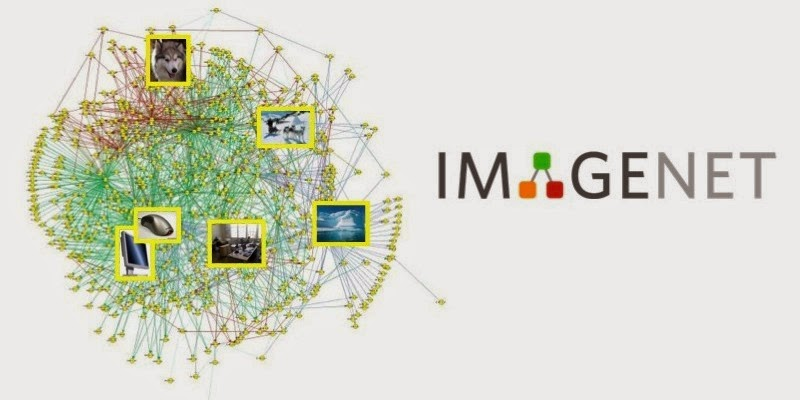


**ImageNet** is an image database organized according to the [WordNet](http://wordnet.princeton.edu) hierarchy (currently only the nouns), in which each node of the hierarchy is depicted by hundreds and thousands of images. The project has been [instrumental](https://qz.com/1034972/the-data-that-changed-the-direction-of-ai-research-and-possibly-the-world/) in advancing computer vision and deep learning research. The data is available for free to researchers for non-commercial use.
</div>

<aside class="notes"></aside></script></section><section  data-markdown><script type="text/template"><!-- .slide: class="drop" -->
<div class="" style="position: absolute; left: 0px; top: 0px; height: 1200px; width: 1920px; min-height: 1200px; display: flex; flex-direction: column; align-items: center; justify-content: center" absolute="true">


</div>

<aside class="notes"><p>Fei-Fei Li</p>
<p>In the late 1980s, Princeton psychologist George Miller started a project called WordNet, with the aim of building a hierarchal structure for the English language. It would be sort of like a dictionary, but words would be shown in relation to other words rather than alphabetical order. For example, within WordNet, the word “dog” would be nested under “canine,” which would be nested under “mammal,” and so on. It was a way to organize language that relied on machine-readable logic, and amassed more than 155,000 indexed words.</p>
</aside></script></section><section  data-markdown><script type="text/template"><!-- .slide: class="drop" -->
<div class="" style="position: absolute; left: 0px; top: 0px; height: 1200px; width: 1920px; min-height: 1200px; display: flex; flex-direction: column; align-items: center; justify-content: center" absolute="true">

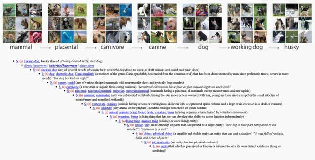
</div>

<aside class="notes"><p>Having read about WordNet’s approach, Li met with professor Christiane Fellbaum, a researcher influential in the continued work on WordNet, during a 2006 visit to Princeton.</p>
</aside></script></section><section  data-markdown><script type="text/template"><!-- .slide: class="drop" -->
<div class="" style="position: absolute; left: 0px; top: 0px; height: 1200px; width: 1920px; min-height: 1200px; display: flex; flex-direction: column; align-items: center; justify-content: center" absolute="true">

## (2012)

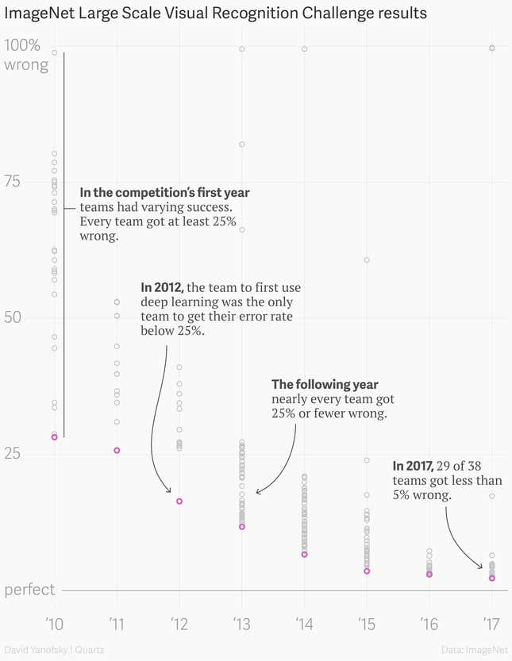

Source: [The data that transformed AI research—and possibly the world](https://qz.com/1034972/the-data-that-changed-the-direction-of-ai-research-and-possibly-the-world)
</div>

<aside class="notes"><p>Geoffrey Hinton, Ilya Sutskever, and Alex Krizhevsky from the University of Toronto submitted a deep convolutional neural network architecture called AlexNet—still used in research to this day—which beat the field by a whopping 10.8 percentage point margin, which was 41% better than the next best.</p>
</aside></script></section><section  data-markdown><script type="text/template"><!-- .slide: class="drop" -->
<div class="" style="position: absolute; left: 0px; top: 0px; height: 1200px; width: 1920px; min-height: 1200px; display: flex; flex-direction: column; align-items: center; justify-content: center" absolute="true">

## Imagenet shortcomings

- Images are not uniformly distributed between categories
- Problematic labels. People are treated as objects. Their photos have been used without their knowledge
- Lack of diversity. Most of the data represents North America and Europe. China and India are represented in only 1% and 2.1% of the images respectively
-  About 5.8% labels are wrong
- 30% of image URLs are broken (4.4 million annotations lost)
</div></script></section><section  data-markdown><script type="text/template"><!-- .slide: class="has-dark-background drop" data-background-color="#304f5e" -->
<div class="" style="position: absolute; left: 0px; top: 0px; height: 1200px; width: 1920px; min-height: 1200px; display: flex; flex-direction: column; align-items: center; justify-content: center" absolute="true">

# 2. Interpreting images
## How does it work?
</div></script></section><section  data-markdown><script type="text/template"><!-- .slide: class="drop" -->
<div class="" style="position: absolute; left: 0px; top: 0px; height: 1200px; width: 1920px; min-height: 1200px; display: flex; flex-direction: column; align-items: center; justify-content: center" absolute="true">

## Break images into tiny pieces
| Artefact     | Processing level       | Example                                                     |
|--------------|------------------------|-------------------------------------------------------------|
| Cinema       | Social – aggregate     | Popular Hollywood cinema                                    |
| Film         | Human                  | Jurassic Park (1993)                                        |
| Clip         | Human/computer         | Raptors in the Kitchen Scene (https://youtu.be/dnRxQ3dcaQk) |
| Shot         | Human-computer         | 130 frames (5.421 s)                                        |
| Frame        | Computer/human         | Individual frame (512 × 340 pixels)                         |
| Pixels       | Numeric – disaggregate | Vector ([176800x1]); Tensor ([16, 3, 340, 512])             |
</div>

<aside class="notes"><p>Yet, there is a relation between archives and datasets.
Each of the films contained in a film archive can be thought of a dataset of frames, and every frame as dataset of pixels.  Through computing, individual frames and their pixels can relate much more freely, not only to other frames in the same film, but to a multitude of other frames in a multitude of other films, in high-dimensional spaces where every pixel might be put in contact with any other.</p>
<p>This table exemplifies the palimpsest of artefacts and levels of analysis at play between audiovisual archives, comprised of artefacts, and datasets atomised for machine learning operations. The epistemic gap between the two ends of the table are yet to be fully understood in the configuration of a computational archive.</p>
</aside></script></section><section  data-markdown><script type="text/template"><!-- .slide: class="drop" -->
<div class="" style="position: absolute; left: 0px; top: 0px; height: 1200px; width: 1920px; min-height: 1200px; display: flex; flex-direction: column; align-items: center; justify-content: center" absolute="true">

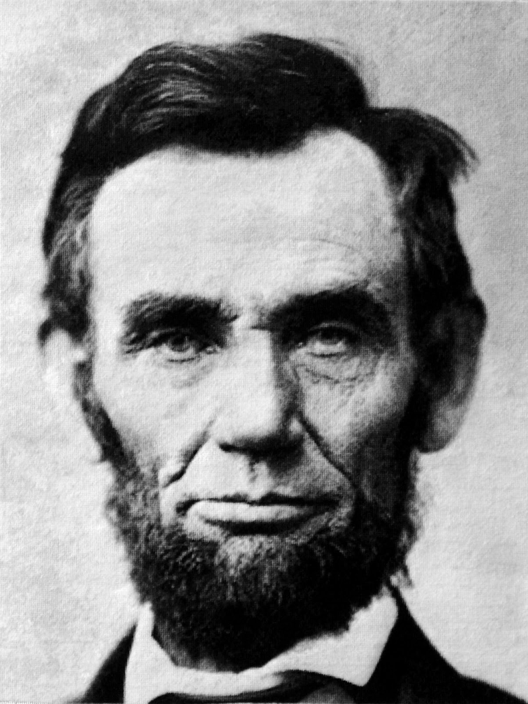
</div></script></section><section  data-markdown><script type="text/template"><!-- .slide: class="drop" -->
<div class="" style="position: absolute; left: 0px; top: 0px; height: 1200px; width: 1920px; min-height: 1200px; display: flex; flex-direction: column; align-items: center; justify-content: center" absolute="true">


</div></script></section><section  data-markdown><script type="text/template"><!-- .slide: class="drop" -->
<div class="" style="position: absolute; left: 0px; top: 0px; height: 1200px; width: 1920px; min-height: 1200px; display: flex; flex-direction: column; align-items: center; justify-content: center" absolute="true">

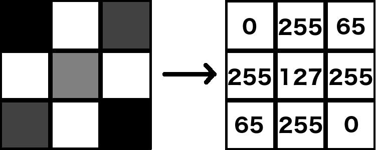
</div>

<aside class="notes"><p>why 255?
Is how much data you can store in 8 bits (one channel)
If you need colour, you need three channels (24 bits)
If you need transparency you need one more channel (alpha)</p>
</aside></script></section><section  data-markdown><script type="text/template"><!-- .slide: class="drop" -->
<div class="" style="position: absolute; left: 0px; top: 0px; height: 1200px; width: 1920px; min-height: 1200px; display: flex; flex-direction: column; align-items: center; justify-content: center" absolute="true">

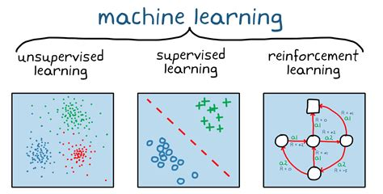
</div></script></section><section  data-markdown><script type="text/template"><!-- .slide: class="drop" -->
<div class="" style="position: absolute; left: 0px; top: 0px; height: 1200px; width: 1920px; min-height: 1200px; display: flex; flex-direction: column; align-items: center; justify-content: center" absolute="true">

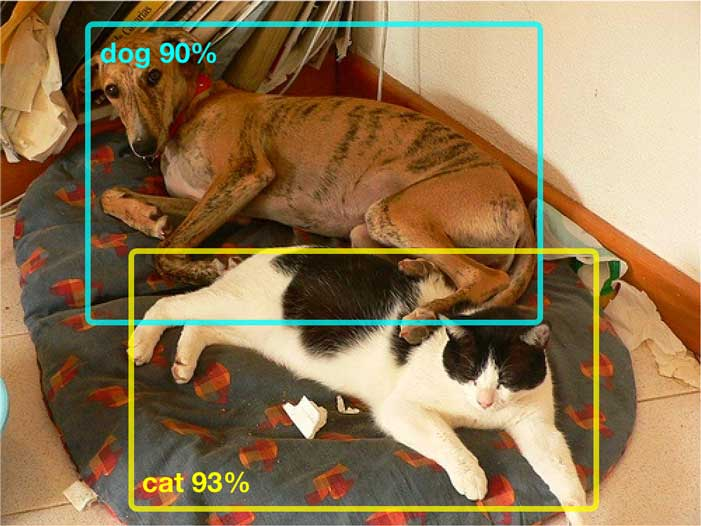
</div></script></section><section  data-markdown><script type="text/template"><!-- .slide: class="drop" -->
<div class="" style="position: absolute; left: 0px; top: 0px; height: 1200px; width: 1920px; min-height: 1200px; display: flex; flex-direction: column; align-items: center; justify-content: center" absolute="true">

# Husky lens
## demo
</div></script></section><section  data-markdown><script type="text/template"><!-- .slide: class="has-dark-background drop" data-background-color="#304f5e" -->
<div class="" style="position: absolute; left: 0px; top: 0px; height: 1200px; width: 1920px; min-height: 1200px; display: flex; flex-direction: column; align-items: center; justify-content: center" absolute="true">

# 3. Self-supervision
## Connecting text and images
</div></script></section><section  data-markdown><script type="text/template"><!-- .slide: class="drop" -->
<div class="" style="position: absolute; left: 0px; top: 0px; height: 1200px; width: 1920px; min-height: 1200px; display: flex; flex-direction: column; align-items: center; justify-content: center" absolute="true">


</div></script></section><section  data-markdown><script type="text/template"><!-- .slide: class="drop" -->
<div class="" style="position: absolute; left: 0px; top: 0px; height: 1200px; width: 1920px; min-height: 1200px; display: flex; flex-direction: column; align-items: center; justify-content: center" absolute="true">

# CSNI
## [demo](https://collection-space-navigator.github.io/)
</div></script></section><section  data-markdown><script type="text/template"><!-- .slide: class="drop" -->
<div class="" style="position: absolute; left: 0px; top: 0px; height: 1200px; width: 1920px; min-height: 1200px; display: flex; flex-direction: column; align-items: center; justify-content: center" absolute="true">

# CLIP

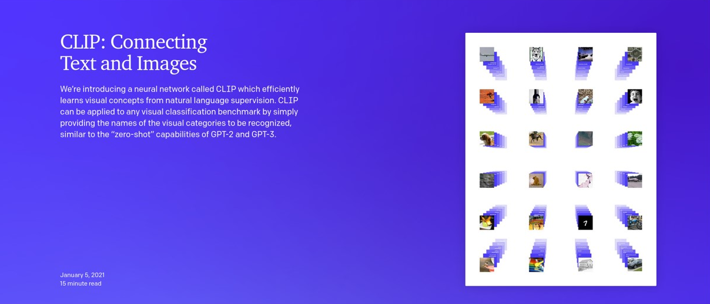
</div>

<aside class="notes"><p><a href="https://arxiv.org/abs/2103.00020">Original clip paper</a> is from 2021.</p>
</aside></script></section><section  data-markdown><script type="text/template"><!-- .slide: class="drop" -->
<div class="" style="position: absolute; left: 0px; top: 0px; height: 1200px; width: 1920px; min-height: 1200px; display: flex; flex-direction: column; align-items: center; justify-content: center" absolute="true">

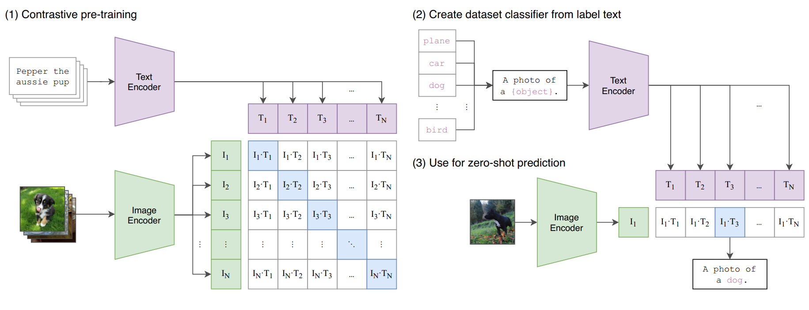
</div></script></section><section  data-markdown><script type="text/template"><!-- .slide: class="has-dark-background drop" data-background-color="#304f5e" -->
<div class="" style="position: absolute; left: 0px; top: 0px; height: 1200px; width: 1920px; min-height: 1200px; display: flex; flex-direction: column; align-items: center; justify-content: center" absolute="true">

# 4. Synthesising Images
## text-to-image UX
</div></script></section><section  data-markdown><script type="text/template"><!-- .slide: class="drop" -->
<div class="" style="position: absolute; left: 0px; top: 0px; height: 1200px; width: 1920px; min-height: 1200px; display: flex; flex-direction: column; align-items: center; justify-content: center" absolute="true">

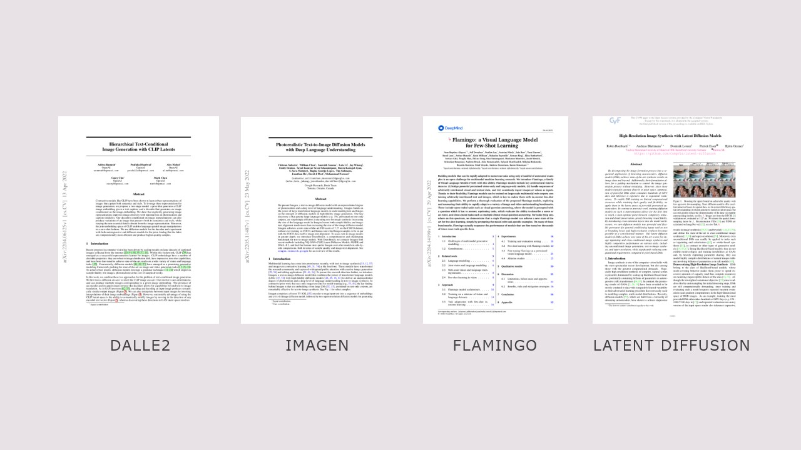
</div></script></section><section  data-markdown><script type="text/template"><!-- .slide: class="drop" -->
<div class="" style="position: absolute; left: 0px; top: 0px; height: 1200px; width: 1920px; min-height: 1200px; display: flex; flex-direction: column; align-items: center; justify-content: center" absolute="true">


</div></script></section><section  data-markdown><script type="text/template"><!-- .slide: class="drop" -->
<div class="" style="position: absolute; left: 0px; top: 0px; height: 1200px; width: 1920px; min-height: 1200px; display: flex; flex-direction: column; align-items: center; justify-content: center" absolute="true">

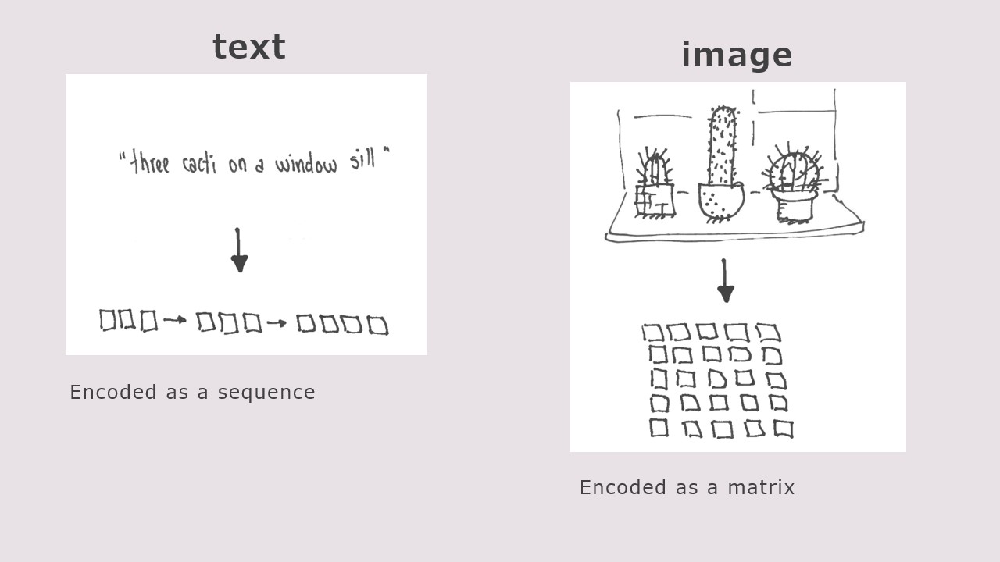
</div></script></section><section  data-markdown><script type="text/template"><!-- .slide: class="drop" -->
<div class="" style="position: absolute; left: 0px; top: 0px; height: 1200px; width: 1920px; min-height: 1200px; display: flex; flex-direction: column; align-items: center; justify-content: center" absolute="true">

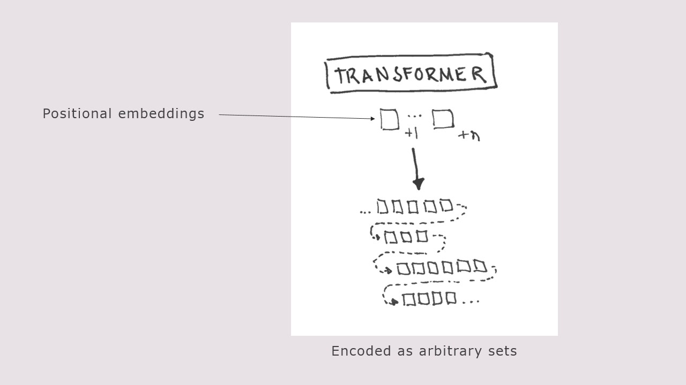
</div></script></section><section  data-markdown><script type="text/template"><!-- .slide: class="drop" -->
<div class="" style="position: absolute; left: 0px; top: 0px; height: 1200px; width: 1920px; min-height: 1200px; display: flex; flex-direction: column; align-items: center; justify-content: center" absolute="true">

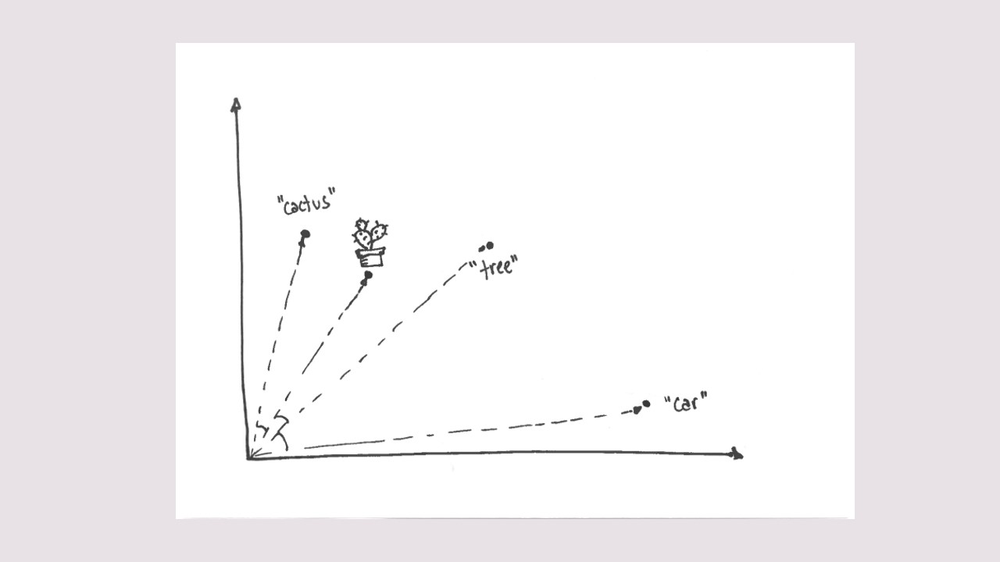
</div></script></section><section  data-markdown><script type="text/template"><!-- .slide: class="drop" -->
<div class="" style="position: absolute; left: 0px; top: 0px; height: 1200px; width: 1920px; min-height: 1200px; display: flex; flex-direction: column; align-items: center; justify-content: center" absolute="true">

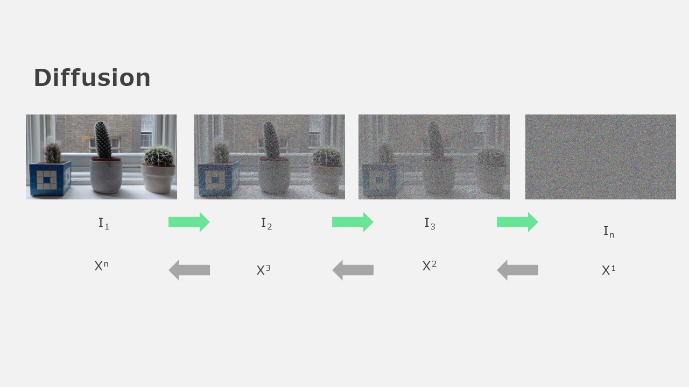
</div></script></section><section  data-markdown><script type="text/template"><!-- .slide: class="drop" -->
<div class="" style="position: absolute; left: 0px; top: 0px; height: 1200px; width: 1920px; min-height: 1200px; display: flex; flex-direction: column; align-items: center; justify-content: center" absolute="true">

# Stable diffusion / dream studio
## [Demo](https://beta.dreamstudio.ai/generate)
</div></script></section><section  data-markdown><script type="text/template"><!-- .slide: class="drop" -->
<div class="" style="position: absolute; left: 0px; top: 0px; height: 1200px; width: 1920px; min-height: 1200px; display: flex; flex-direction: column; align-items: center; justify-content: center" absolute="true">

# Can <u>*we*</u> see the world <u>*through*</u> computers?
</div></script></section><section  data-markdown><script type="text/template"><!-- .slide: class="drop" -->
<div class="" style="position: absolute; left: 0px; top: 0px; height: 1200px; width: 1920px; min-height: 1200px; display: flex; flex-direction: column; align-items: center; justify-content: center" absolute="true">

# Questions?
</div></script></section></div>
    </div>

    <script src="dist/reveal.js"></script>

    <script src="plugin/markdown/markdown.js"></script>
    <script src="plugin/highlight/highlight.js"></script>
    <script src="plugin/zoom/zoom.js"></script>
    <script src="plugin/notes/notes.js"></script>
    <script src="plugin/math/math.js"></script>
	<script src="plugin/mermaid/mermaid.js"></script>
	<script src="plugin/chart/chart.min.js"></script>
	<script src="plugin/chart/plugin.js"></script>
	<script src="plugin/menu/menu.js"></script>
	<script src="plugin/customcontrols/plugin.js"></script>
	<script src="plugin/chalkboard/plugin.js"></script>
	<script src="plugin/reveal-pointer/pointer.js"></script>
	<script src="plugin/elapsed-time-bar/elapsed-time-bar.js"></script>

    <script>
      function extend() {
        var target = {};
        for (var i = 0; i < arguments.length; i++) {
          var source = arguments[i];
          for (var key in source) {
            if (source.hasOwnProperty(key)) {
              target[key] = source[key];
            }
          }
        }
        return target;
      }

	  function isLight(color) {
		let hex = color.replace('#', '');

		// convert #fff => #ffffff
		if(hex.length == 3){
			hex = `${hex[0]}${hex[0]}${hex[1]}${hex[1]}${hex[2]}${hex[2]}`;
		}

		const c_r = parseInt(hex.substr(0, 2), 16);
		const c_g = parseInt(hex.substr(2, 2), 16);
		const c_b = parseInt(hex.substr(4, 2), 16);
		const brightness = ((c_r * 299) + (c_g * 587) + (c_b * 114)) / 1000;
		return brightness > 155;
	}

	var bgColor = getComputedStyle(document.documentElement).getPropertyValue('--r-background-color').trim();
	var isLight = isLight(bgColor);

	if(isLight){
		document.body.classList.add('has-light-background');
	} else {
		document.body.classList.add('has-dark-background');
	}

      // default options to init reveal.js
      var defaultOptions = {
        controls: true,
        progress: true,
        history: true,
        center: true,
        transition: 'default', // none/fade/slide/convex/concave/zoom
        plugins: [
          RevealMarkdown,
          RevealHighlight,
          RevealZoom,
          RevealNotes,
          RevealMath.MathJax3,
		  RevealMermaid,
		  RevealChart,
		  RevealCustomControls,
		  RevealMenu,
	      RevealPointer,
		  RevealChalkboard, 
		  ElapsedTimeBar
        ],


    	allottedTime: 120 * 1000,

		mathjax3: {
			mathjax: 'plugin/math/mathjax/tex-mml-chtml.js',
		},
		markdown: {
		  gfm: true,
		  mangle: true,
		  pedantic: false,
		  smartLists: false,
		  smartypants: false,
		},

		mermaid: {
			theme: isLight ? 'default' : 'dark',
		},

		customcontrols: {
			controls: [
				{id: 'toggle-overview',
				title: 'Toggle overview (O)',
				icon: '<i class="fa fa-th"></i>',
				action: 'Reveal.toggleOverview();'
				},
				{ icon: '<i class="fa fa-pen-square"></i>',
				title: 'Toggle chalkboard (B)',
				action: 'RevealChalkboard.toggleChalkboard();'
				},
				{ icon: '<i class="fa fa-pen"></i>',
				title: 'Toggle notes canvas (C)',
				action: 'RevealChalkboard.toggleNotesCanvas();'
				},
			]
		},
		menu: {
			loadIcons: false
		}
      };

      // options from URL query string
      var queryOptions = Reveal().getQueryHash() || {};

      var options = extend(defaultOptions, {"width":1920,"height":1200,"margin":0,"controls":true,"progress":true,"slideNumber":true,"transition":"slide","transitionSpeed":"default"}, queryOptions);
    </script>

    <script>
      Reveal.initialize(options);
    </script>
  </body>

  <!-- created with Advanced Slides -->
</html>
